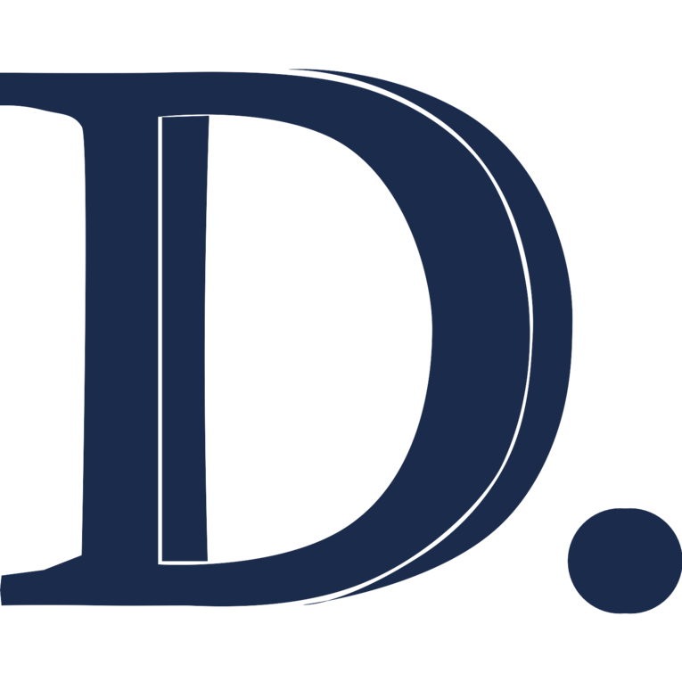

New "D." mark + hybrid favicon system. Wordmark unchanged from v5.
transparent · on white
d-mark-transparent · two-tone Coral
cream · on navy

d-mark-cream · mono Cream
dark · on cream

d-mark-dark · mono Navy
white · on coral

d-mark-white · mono White